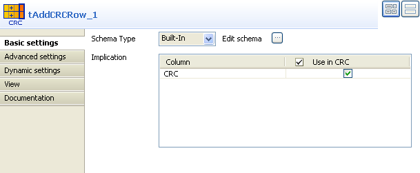

Scenario: Adding a surrogate key to a file
This scenario describes a job adding a surrogate key to a delimited file schema.

- Click and drop the following components: tFileInputDelimited, tAddCRCRow and tLogRow.
- Connect them using a Main row connection.
- In the tFileInputDelimited Properties view, set the File Name path and all related properties in case these are not stored in the Repository.
- Create the schema through the Edit Schema button, in case the schema is not stored already in the Repository. In Java, mind the data type column and in case of Date pattern to be filled in, check out http://java.sun.com/j2se/1.5.0/docs/api/index.html.
- In the tAddCRCRow Properties view, check the Input flow columns to be used to calculate the CRC.
- Notice that a CRC column (read-only) has been added at the end of the schema.
- Select CRC32 as CRC Type to get a longer surrogate key.
- In the tLogRow Properties view, check the Print values in cells of a table option to display the output data in a table on the Console.
- Then save your job and run it.




An additional CRC Column has been added to the schema calculated on all previouly selected columns (in this case all columns of the schema).